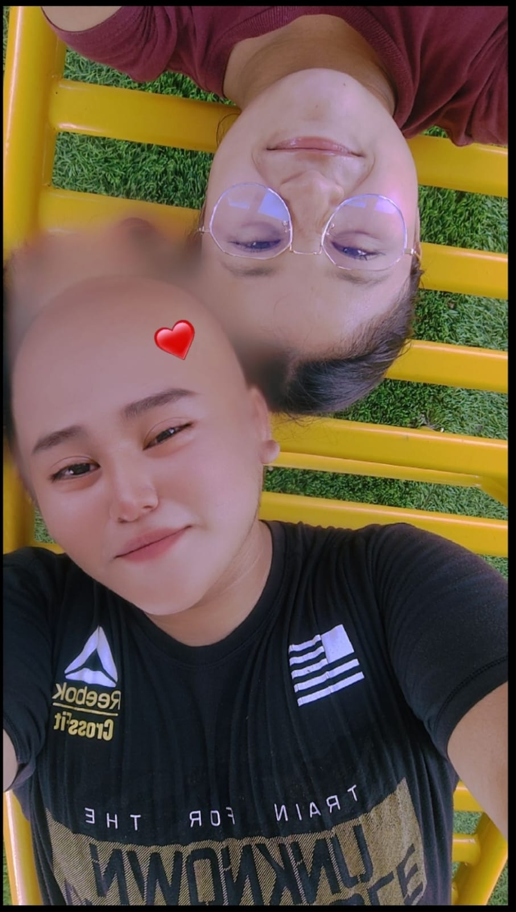

27
MAYO 2025
EL COMIENZO
El día que nos conocimos
Un 27 de mayo de 2025 nuestras vidas se cruzaron por primera vez.
Tal vez ese día ninguno de los dos sabía todo lo que estaba a punto de comenzar. Pero entre tantas personas, tantos días y tantos momentos posibles, terminamos encontrándonos.
Y qué bonito pensar que todo comenzó simplemente con conocernos.

Todo comenzó aquí ♡